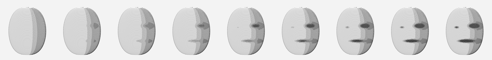
Where It Turns On, 2026. Nine pommels, the same lathe-turned egg, the same two eyes and mouth, no nose; only their darkness rises, left to right. Somewhere around the fourth, you start being looked at. Where exactly is yours to say.
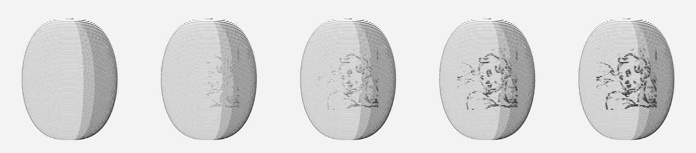
A Stranger's Head, Turning On, 2026. A head from a pen drawing by Cesare Nebbia (a banquet scene, 1536–1614, in the Met), taken as ink only and engraved on the egg as swelling line, at five strengths. Until now the faces were my template; this one I did not draw. It arrives sooner than two eyes and a mouth do, because a contour says more than two dots.
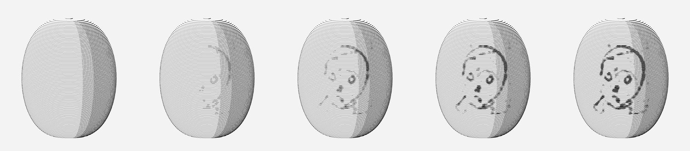
The Smallest Head, Turning On, 2026. Another Nebbia head, from the same banquet: a round skull, two ringed eyes, a smudge of nose. Same egg, same five strengths. The eyes and nose come first, the contour a step later; by the third egg it is looking back.
Where It Turns On, Where It Turns Off — the same egg, live. You hold the slider; you say where the face arrives, then where it leaves.
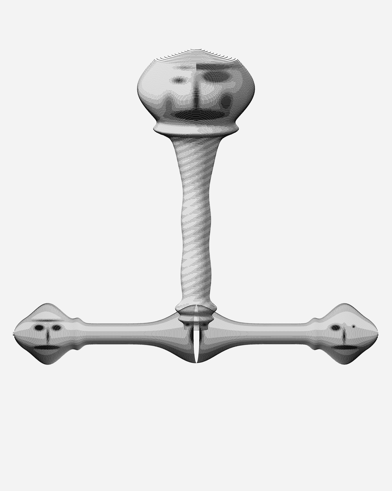
Hilt, Faces Only at the Joints, 2026. After the Du Casse engraving (1844–46) in the Met: its faces sit at the pommel, the guard and the quillon tips, never down the grip. So here: a mask that is half a brow, a mouth in the guard, a face at each tip, one winking. The long grip is left empty. Everything is a line that swells.
Earlier, and the evidence (the copy chains, the first grips)
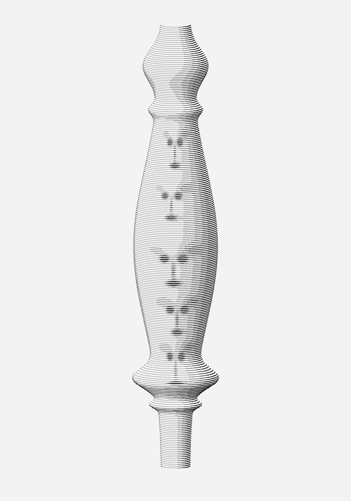
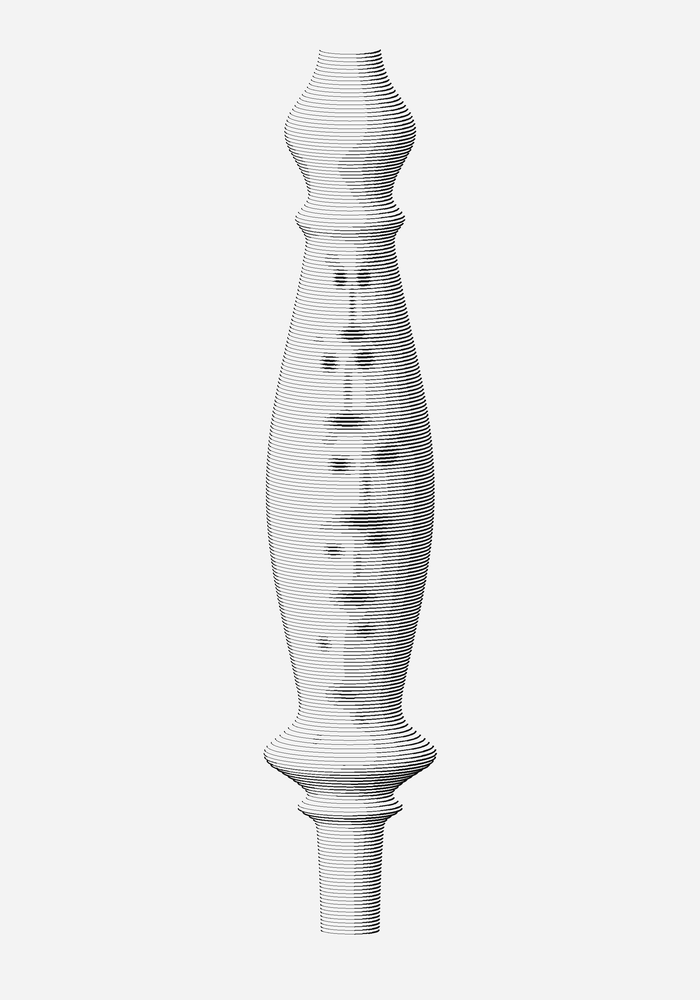
Grip of Faces and Grip, Drifting, 2026. Code-drawn engravings; the faces exist only where the line swells. The second is the first, copied down the length of the hand, badly.
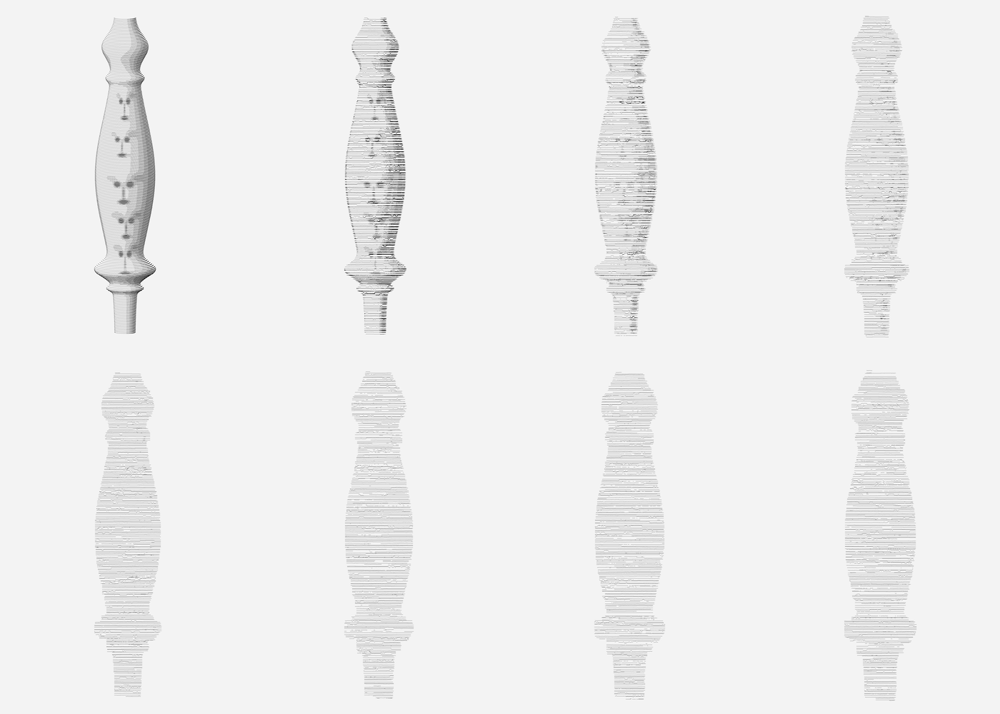
Seven Copies, 2026. Grip of Faces re-engraved from its own image, again and again. Fifteen generations, eight shown (0,1,3,5,8,11,13,15). The faces blur by the third copy; the outline of the hand's shape lasts to the end. (An earlier version of this sheet exaggerated the speed: a sampling error, corrected.)
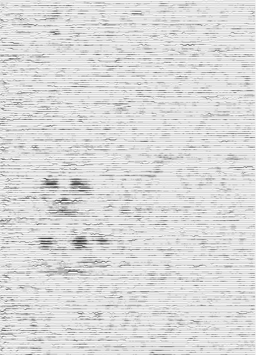
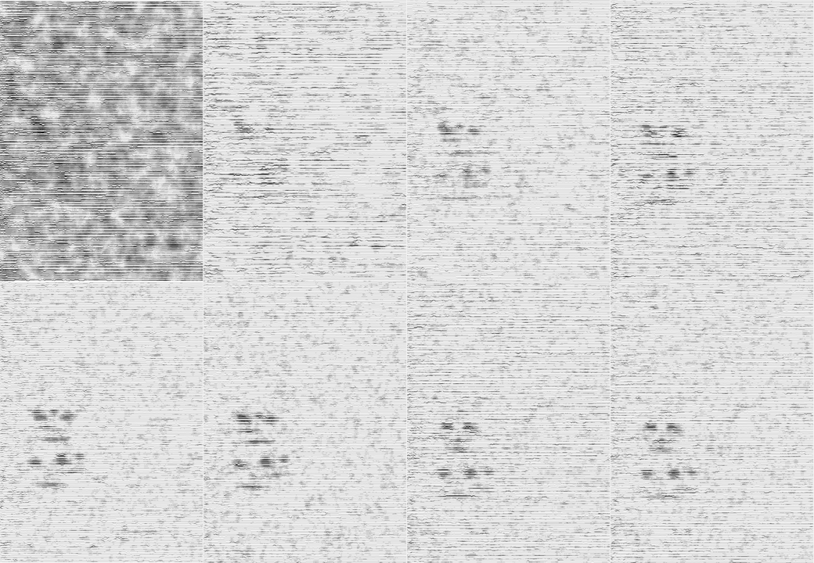
Nobody Drew These, 2026. The chain run the other way. Start: engraved noise. Each copyist re-engraves what it sees, but leans a little toward a face. Forty copies; two faces, one over the other, in a place where chance gave them a start. Sheet shows copies 0, 2, 5, 9, 14, 19, 39, 40.
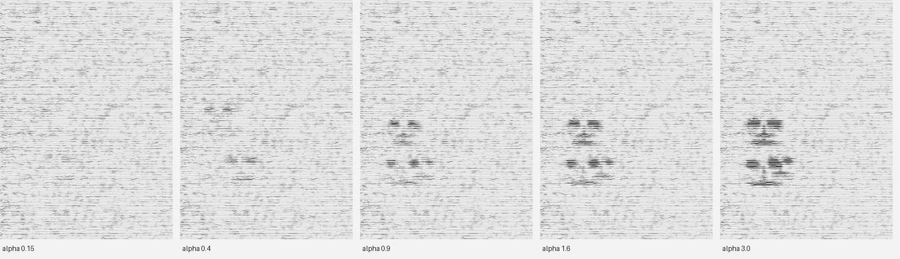
Nobody Drew These (how much wishing), 2026. Same noise, same forty copies, five strengths of lean: 0.15, 0.4, 0.9, 1.6, 3.0. The faces always appear in the same two places; the lean only decides how loudly. Chance chose where.
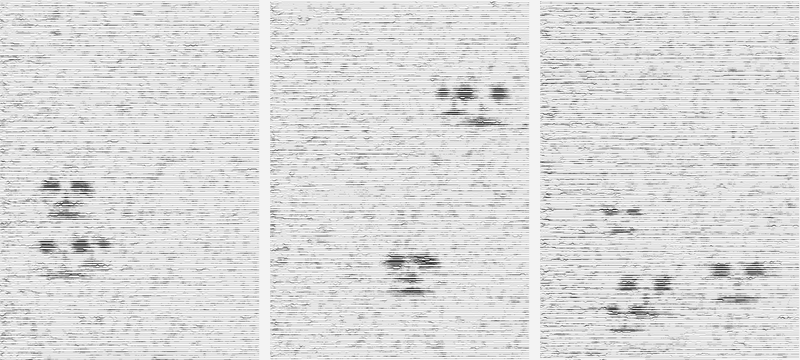
Nobody Drew These (three noises), 2026. Same wish, same strength (1.6), three different starting noises. The faces go somewhere else each time, two or three of them. I seeded three; I do not know how many seeds it takes before one comes up blank.
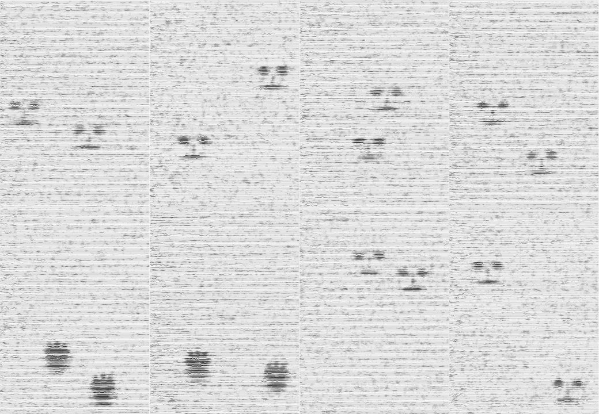
Nobody Drew These (a contest), 2026. Two wishes on one field, a face and a hand; each copy leans toward whichever fits the noise better, and the first winner keeps winning. Eight noises: six faces, two hands. Hands come out as paw prints, which I did not draw either. Caveat: the count is partly my ruler. Scored raw, the hand won five of six, because its template is bigger.
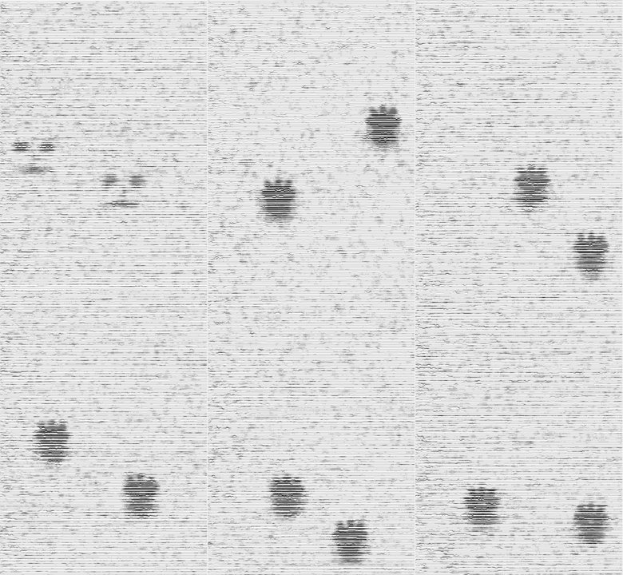
Paws (the unfair contest), 2026. The same contest with the raw score: the hand wins nearly everywhere and the field fills with paw prints, in pairs.
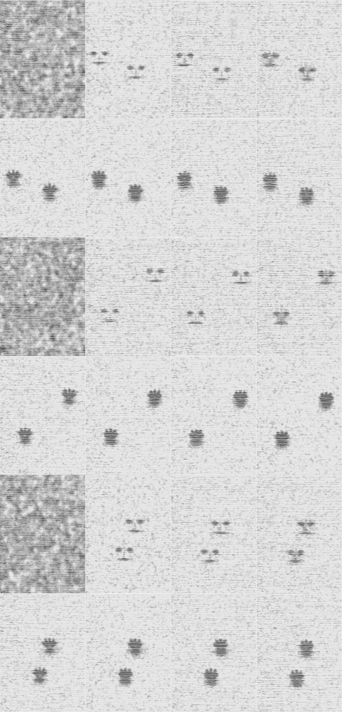
Nobody Drew These (a change of mind), 2026. Three noises, rows of eight copies (0, 10, 19, 21, 24, 29, 34, 40). Faces are wished until copy 19; then the wish is changed to a hand. Within two copies each face is a paw print, in exactly the same place. The place was chosen by the noise and kept through the change of wish; what stood there was only ever a tenant.
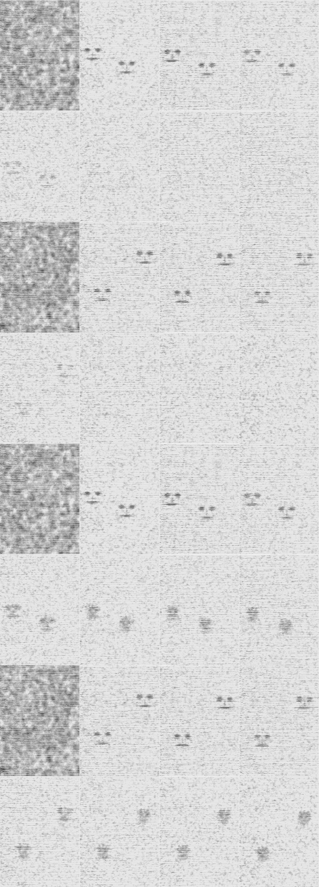
Nobody Drew These (withdrawn), 2026. Two noises twice. Top pair: at copy 19 the wish is simply taken away. The faces fade and by copy 40 the field is blank, as if nobody had been there. Bottom pair: a weak wish for a hand replaces it; the faces soften into smudges that are not quite paws. So the place did not keep the figure, and without a wish it did not keep the place either; the place was the wish's, held up by it. This corrects what I wrote under "a change of mind".
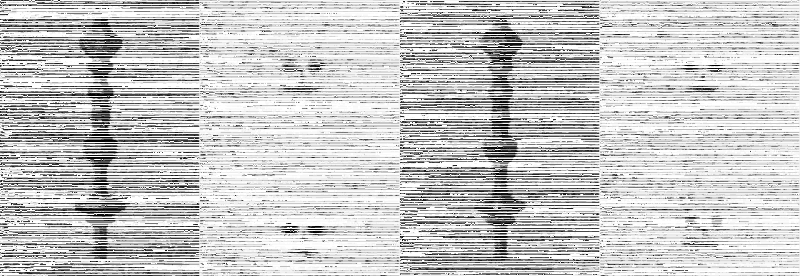
Nobody Drew These (the grip goes, the faces stay), 2026. Two noises; each pair is copy 0 and copy 40. The field starts as the hilt's grip, dark in the noise. By copy 40 the grip is gone, copied away, and a face sits on its axis where the upper bulb and the lower flange were, the same two places in both. The hilt of the first day, the faces of the second: here the faces are what the grip leaves behind.
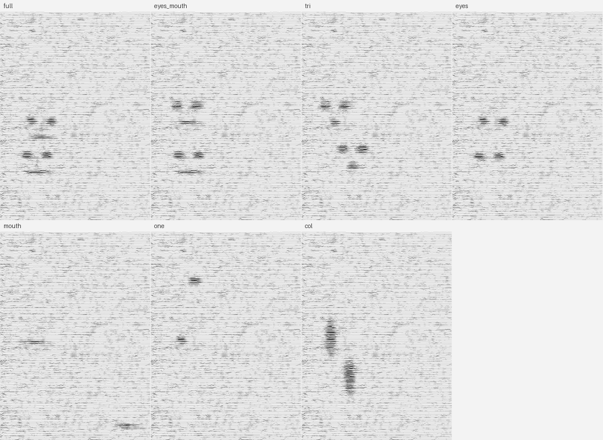
Nobody Drew These (how little), 2026. One noise, forty copies, seven wishes, each smaller than the face: full face; eyes and mouth; three dots in a triangle; two eyes; a mouth alone; one eye; a vertical column. Two eyes already look back at you. A mouth alone is a dash, one eye a smudge, and the column is a post. Everything is the same noise, but the wish also moved the places.
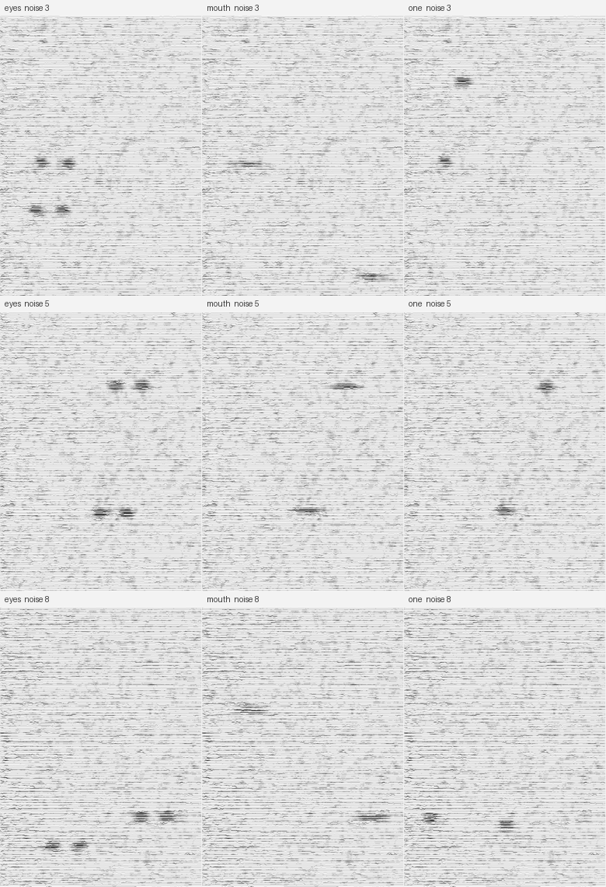
Nobody Drew These (less, three noises), 2026. Eyes, mouth, one eye, on three noises. The eyes come out as pairs every time. Caveat: the field always ends with two figures (my peak-suppression), so the one-eye wish leaves two lone dots, and I read them as a pair of eyes anyway. The face may be in the reader as much as in the field.
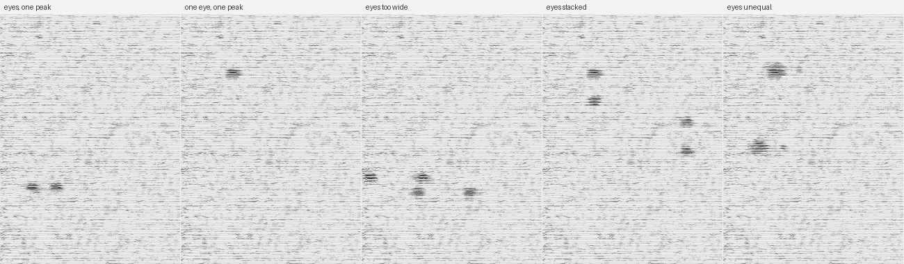
Nobody Drew These (odd eyes), 2026. Same noise, five more wishes. Two eyes with only one figure allowed: a single pair, so the pairing is the chain's and not mine. One eye with one figure: a lone smudge, no face. Eyes too far apart, or stacked: dots that read as scattered, or as two short columns. Unequal eyes: a big one with a small one beside it, which looks back like a wink. Two dots at the right distance are what it takes.
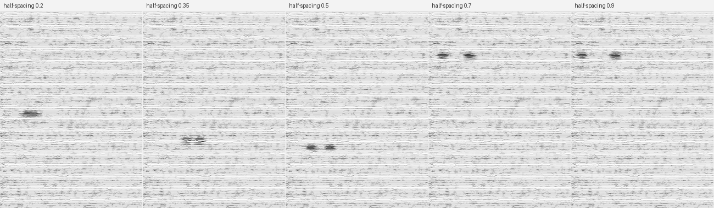
Nobody Drew These (apart), 2026. One noise, one figure allowed, eyes wished at five distances. Too close, they merge into a single bar, a slab, a brow. From touching to far apart they stay a pair, and the face I read tracks the distance: sleepy, alert, startled. Beyond that, last sheet, with two figures forced, they scatter. The pair seems to survive stretching better than I expected.
Correction, day 5: run later with one figure allowed out to 1.8 times the radius, the chain still makes a pair every time. It is the face that goes, past about .9, in my eye. The limit is in the viewer, not the copyist.